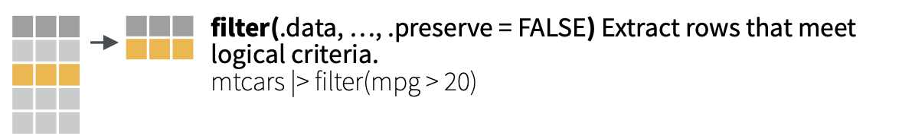
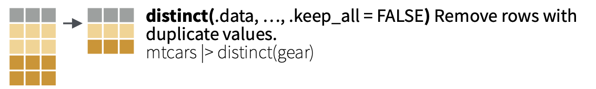
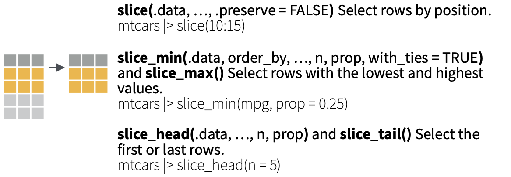
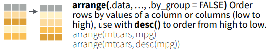
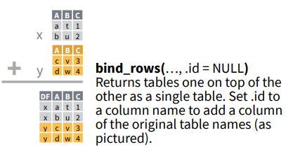

2. Manipulating Rows
| Select rows | filter(), distinct(), slice() |
| Arrange rows | arrange() |
| Combine rows | bind_rows() |
Follow along with the code in section (2) of the R script. We will walk through each function with the visual explanations from the dplyr cheat sheet.
2.1 Filter rows with filter()
Goal: Keep only the rows that meet a condition.

# Keep only the people who volunteered
volunteers <- sgvp |>
filter(volunteer == "Volunteer")
# Keep people who volunteered more than 500 hours in the past year
dedicated <- sgvp |>
filter(volunteer_hours > 500)
Useful comparison operators:
== equal to | != not equal to |
> greater than | < less than |
>= greater than or equal | <= less than or equal |
Non-volunteers have NA for volunteer_hours. filter() drops any row where the condition can’t be checked, so they are removed automatically.
You can combine conditions:
# A comma (or &) means AND: both conditions must be true
dedicated_bc <- sgvp |>
filter(volunteer_hours > 500, province == "British Columbia")
# | means OR: at least one condition must be true
west_coast <- sgvp |>
filter(province == "British Columbia" | province == "Alberta")
# %in% is a shortcut for several ORs on the same column
prairies <- sgvp |>
filter(province %in% c("Manitoba", "Saskatchewan", "Alberta"))
What changed: You now have a smaller data frame that keeps only rows matching the condition.
Practice
Keep volunteers aged 15 to 24 who volunteered more than 200 hours.
Click here for solution
young_dedicated <- sgvp |> filter(age_group == "15 to 24 years", volunteer_hours > 200)
2.2 Keep unique rows with distinct()
Goal: See the unique values in a column. This is a quick way to see what categories a column contains.

age_groups <- sgvp |>
distinct(age_group)
# With more than one column, distinct() keeps each unique COMBINATION
age_gender <- sgvp |>
distinct(age_group, gender)
What changed: Duplicate values are removed, so each value (or combination) appears once.
Practice
What education levels are in the data? How many are there?
Click here for solution
education_levels <- sgvp |> distinct(education) # There are 5, including "Not stated"
2.3 Pick specific rows with slice() and helpers
Goal: Select rows by position, or by the largest or smallest values.

# slice() keeps rows by their POSITION (row number)
rows_10_15 <- sgvp |>
slice(10:15)
# slice_max() keeps the rows with the largest values
# The 10 people who volunteered the most hours:
top_volunteers <- sgvp |>
slice_max(volunteer_hours, n = 10)
What changed: slice() selects rows by position. slice_max() and slice_min() select rows with the largest or smallest values of a column.
Practice
Find the 10 people who donated the most money (donation_amount).
Click here for solution
top_donors <- sgvp |> slice_max(donation_amount, n = 10)
2.4 Reorder rows with arrange()
Goal: Sort rows by one or more columns.

# arrange() sorts rows by a column, smallest to largest
by_hours <- sgvp |>
arrange(volunteer_hours)
# desc() sorts from largest to smallest. Here we sort by province, then by
# hours (largest first) within each province.
by_province_hours <- sgvp |>
arrange(province, desc(volunteer_hours))
What changed: The same rows are kept, but their order changes.
Practice
Sort the data by donation_amount, largest first.
Click here for solution
by_donation <- sgvp |> arrange(desc(donation_amount))
2.5 Combine rows with bind_rows()
Goal: Stack data frames on top of each other.

# Top 5 volunteers in BC and in Ontario
top_bc <- sgvp |>
filter(province == "British Columbia") |>
slice_max(volunteer_hours, n = 5)
top_on <- sgvp |>
filter(province == "Ontario") |>
slice_max(volunteer_hours, n = 5)
top_bc_on <- bind_rows(top_bc, top_on)
What changed: bind_rows() stacks the data frames, matching columns by name. If one data frame has a column the other doesn’t, the missing values are filled with NA.
Practice
Add the top 5 volunteers from Quebec to top_bc_on.
Click here for solution
top_qc <- sgvp |> filter(province == "Quebec") |> slice_max(volunteer_hours, n = 5) top_bc_on_qc <- bind_rows(top_bc_on, top_qc)
Loading last updated date...